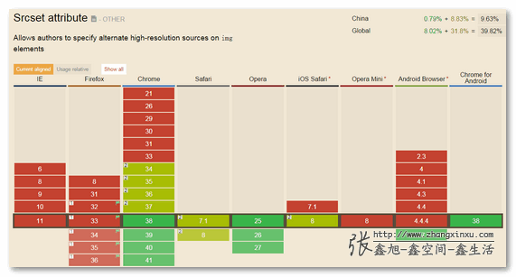
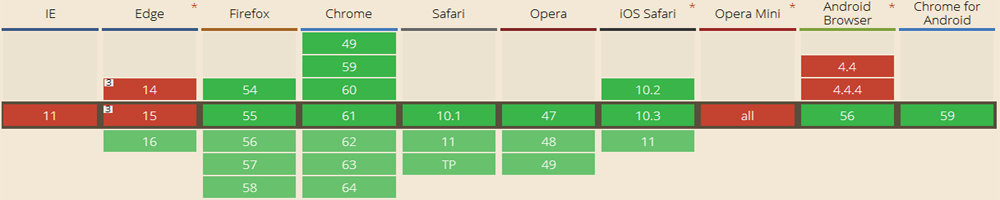
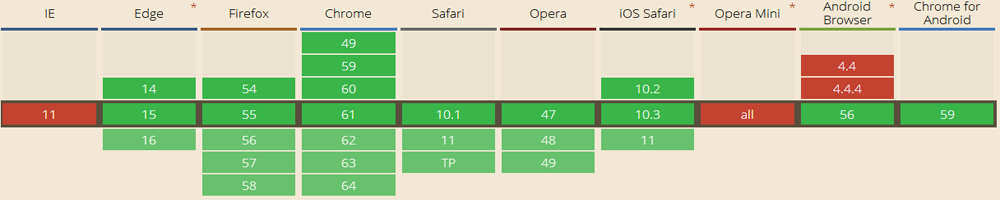

(First of all, this is the blog which is translated from my Chinese blog written in 2016. So I also think this blog should belong to the 2016's blogs even I have changed some pictrues and words of it.)
Now it's 2 p.m. New York time on September 14th, I just finished my PL class and came back, ate some sweet dumplings, tired. But I want to translate my blog written in 2016 into English which is related to the responsive picture skill. Because as time goes by, the support ability of our browsers is increased, for example, one method to create responsive picture is using "srcset" attribute, before 2016, we can see the support ability as follows: (The picture is from
Zhang Xinxu's blog)

But now, let's see the support ability:

You can see the "srcset" attribute has been supported well, at least much better than 2014.
Ok, no more nonsense, let's begin.
1. "srcset" attribute
The compatibility graph is showed above. And this attribute is from browser's view, because it's embedded in the tag.
<img src="test1.png" srcset="test2.png 1000w" alt="">
Before 2016, we have to add the device pixel ratio information, such as "test2.png 1000w 2x". But now, just like what I have said this attribute is supported by browser, so we don't need to add device pixel ratio information, this task is given to the browser.
And this attribute is also easy to understand, if the browser screen is bigger than 1000, the img tag will use "test2.png", otherwise it will use "test1.png".
Ok, this attribute only tells us which picture we should select, but we don't know which width is better to show the picture in that situation. Although for the most of time, we often use "width:100%" to achieve this goal, however, sometimes we want to change our layout in some special devices in order to get better user experience. So we can use "size" attribute.
<img src="test1.png" srcset="test2.png 1000w"
sizes="(max-width: 1000px) 500px, (min-width:1000px) 100%">
It's also easy to understand, the media query is in parentheses, the number is width of picture in that situation.
2. "picture" tag
The "picture" tag is from coders' view, it's just like HTML5 video. We should put some "source" tags to link different pictures in order to suit to different devices.
First let's see the compatibility:

The compatibility is almost the same as "srcset".
Second let's discuss how to use this tag.
<picture>
<source srcset="nyu.jpg" media="(min-width: 768px)">
<source srcset="test.jpg" media="(min-width: 300px)">
<img srcset="timg.jpg">
</picture>
If you have used HTML5 video, you must be familiar with "source" tag. It's just use media query and put different picture in the different situation, and the "img" tag will be showed when the screen is less than 300px or the browser doesn't support "picture" tag.
In this place, I want to mention two things:
(1) The "img" tag must be required.
(2) Some blogs use "src" attribute instead of "srcset" in "source" tag, but from my tests, it doesn't work, so it's better to use "srcset" attribute in "source" tag, but this lead one more question as follows.
My question:
If the "source" tag can only use "srcset" attribute(I have tested "src", it really cannot work), why does "picture" tag get better compatibility than "srcset" in IE14 and IE15? (You can look the compatibility pictures above)
I'm confused, maybe I think too less? If you have any explanations, please don't hesitate to contact me: liyulinnyu@gmail.com. Thank you so much.
(That's all)